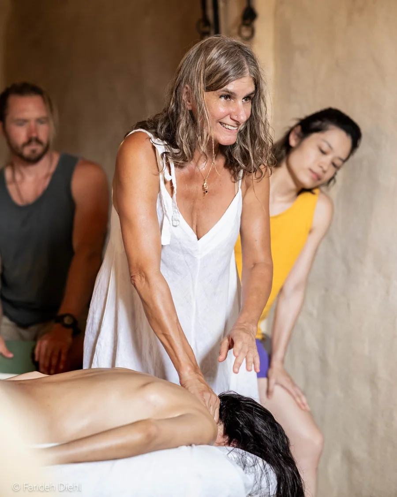

Charla · Barcelona
Una charla para conocer la Formación Anual de cerca
Un encuentro para ver cómo se enseña el masaje californiano psicosomático, qué se trabaja en cada módulo y resolver tus dudas antes de decidir.
- Fecha
- 27 de enero de 2027Miércoles
- Hora
- Por confirmarTe lo decimos en cuanto esté cerrada
- Lugar
- Spazio BodyworkC/ Viladomat 152, 2ª · Barcelona
Qué vas a ver
- En qué consiste la formación, módulo a módulo, y qué se aprende en cada fin de semana.
- Cómo es una clase por dentro: práctica por parejas, supervisión y ritmo del grupo.
- De dónde viene este trabajo y qué lo hace distinto del masaje convencional.
- Qué se necesita para empezar, aunque nunca hayas tocado a nadie.
Para quién es
Para quien está pensando en formarse y quiere verlo antes de decidir. También para terapeutas que ya trabajan con el cuerpo y quieren conocer el enfoque psicosomático.
No hace falta experiencia previa. Si vienes con dudas, mejor: la charla existe para eso.

Quién la da
Sujati, creadora y directora de Spazio Bodywork®. Pionera en la introducción del masaje californiano y Esalen® en España, lleva más de 30 años dedicada al trabajo corporal y 20 formando terapeutas.
Su enfoque, el masaje californiano psicosomático, integra el toque somático y el conocimiento del sistema nervioso.
Si quieres venir, escríbenos y te guardamos sitio
27 de enero de 2027 · Spazio Bodywork, C/ Viladomat 152, 2ª · Barcelona
Reservar por WhatsAppTe confirmamos por WhatsApp.